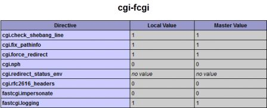
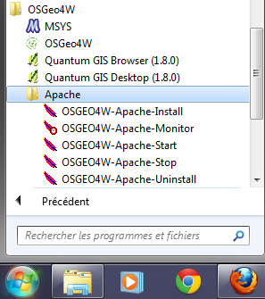
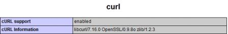

Installing Lizmap on Windows¶
Cette documentation présente le déroulement de l’installation de Lizmap Web Client sur un environnement Windows 7. Les autres versions de Windows ne devraient pas poser de problème. Afin de faciliter l’installation, nous utilisons le logiciel OSGeo4W, qui permet d’installer l’ensemble des composants nécessaires de manière centralisée.
Note
Dans ce document, nous utilisons la version 2.7.0 de Lizmap. Veuillez à adapter en fonction de la version que vous souhaitez installer (la dernière est recommandée)
Installation¶
- Download OSGeo4W on the QGIS download page:
http://hub.qgis.org/projects/quantum-gis/wiki/DownloadFr#Installateur-R%C3%A9seau-OSGeo4W
- Run OSGeo4W installer and choose the advanced installation
- Use internet installation
- Select the root for OSGeo4W elements installation and prefer the option for acces to all users

- Select the root of local packages
- Specify the type of internet connection(with proxy or not)

- Select in ‘Desktop’ the package ‘QGIS-full’

- Select in ‘Web’ the package ‘QGIS-server’

- Select in ‘Lib’ the package ‘fcgi’
- Launch and complete the installation
At this stage all that is necessary to LizMap is installed on your computer. The next steps are to configure the server, install and configure LizMap.
- Checking Apache
To verify that the server is well installed, open the address http://localhost in the browser.
If nothing is displayed that the installation has failed.
- Checking PHP
Click on the link ‘phpinfo’ on the home page of the OSGeo4W Apache server. This page allows you to check the configuration of your server. You should find information about cgi-fcgi, PDO and PDO_sqlite but not on CURL or GD which depends LizMap.

- Enable CURL and GD2
Open the file C:OSGeo4WbinPHP.ini and uncomment the extensions curl and gd2

- Restart Apache
Modifying the file C:OSGeo4WbinPHP.ini to activate CURL and GD in PHP, requires to restart the Apache server. To do this,
click in the windows main menu on the apache monitor ‘All programs > OSGeo4W > Apache > OSGeo4W-Apache-Monitor’
Click on the apache monitor that is among the hidden icons in the task bar (bottom right) and on ‘Restart’

- Checking CURL and GD
In the browser, reload the page ‘phpinfo’. You should find CURL and GD section.
- Download LizMap
The LizMap Web Client code is free and downloadable from github. To download the last version:
- Go to https://github.com/3liz/lizmap-web-client/tags
- Click on the small link zip of the latest version. For example the following link is for the 2.7.0 version: https://github.com/3liz/lizmap-web-client/archive/2.7.0.zip
- Unzip LizMap in ‘C:OSGeo4Wapachehtdocslizmap’
You should now have a folder ‘C:OSGeo4Wapachehtdocslizmaplizmap-web-client-2.7.0’
- Test the Lizmap installation
Test whether LizMap is well installed by oppening the address http://localhost/lizmap/lizmap-web-client-2.7.0/lizmap/www in the browser. You should see the project “Montpellier” comes with LizMap and configured to be visible by all. To view the map, it will have to configure LizMap.
- Admin interface
Go to http://localhost/lizmap/lizmap-web-client-2.7.0/lizmap/www/admin.php in the browser and connect with the login / password : ‘admin/admin’.
- Modifying the QGIS Server URL
- Click on ‘LizMap config’ then modify in the Services section to specify the QGIS Server url.
- Replace the WMS Server url by http://127.0.0.1/qgis/qgis_mapserv.fcgi.exe and save :
- Verifying
To ensure that the configuration was successfull, click on ‘Projects list’ on top of the page. You should have acces to two maps since you are logged in as admin. Click on one of the maps. If the configuration is correct you should see the map and be in possession of a LizMap version ready for your maps.
Add spatiatlite support to PHP¶
Pour pouvoir utiliser les annotations sur des couches spatiatlite, il faut ajouter l’extension spatialite dans PHP. Malheureusement, il faut une version de PHP au moins égale à la 5.3 pour le faire, et pour l’instant, l’installateur OSGeo4W ne propose que la 5.2.
Il n’est donc pas possible pour l’instant sous Windows d’utiliser des couches Spatialite pour l’annotation.
Lizmap Web Client teste si le support du spatialite est bien activé dans le PHP. S’il ne l’est pas, alors les couches Spatialite ne seront pas utilisables dans l’outil d’annotation. Vous pouvez toujours utiliser des données PostGreSQL à la place.